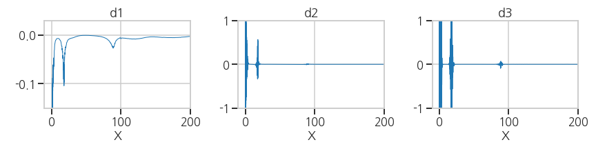
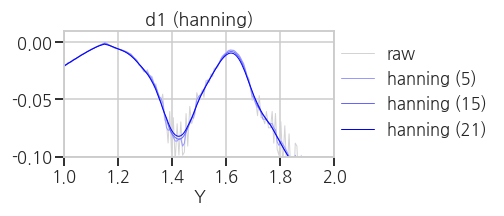
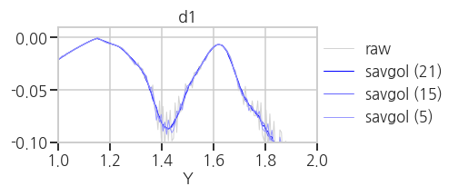

- 물을 끓이는 등 상태가 변할 때, 에너지가 흡수되어 온도가 일정하게 유지됩니다.
- 위와 같은 그래프에서 평평한 영역을 찾고, 각 구간의 대표점을 추출하겠습니다.
- 데이터 추출과 시각화 과정에서 사용되는 기법은 다음과 같습니다.
- Noise Reduction
scipy.ndimage: signal averaging, mediannp.hanning,np.hamming,np.bartlett,np.blackman: smoothing of a 1D signalscipy.signal.savgol_filter: noisy signal smoothing
- Clustering
sklearn.cluster.DBSCAN: unsupervised clustering
- Visualization
r'$ LaTeX_expr $': matplotlib 에서 LaTeX 표현matplotlib.axes.Axes.axhline: 수평선 그리기matplotlib.axes.Axes.inset_axes: matplotlib plot에 inset 삽입matplotlib.axes.Axes.fill_between: matplotlib plot중 조건에 맞는 구간 칠하기아래 글은 요약본이며, 전체 코드는 링크를 통해 확인할 수 있습니다.
1. Project Preparation
1.1. Import Libaries
- 제가 사용한 라이브러리들의 버전을 먼저 확인해보겠습니다.
1
2
3
4
5
6
7
8
9
10
11
12
13
14import pandas as pd
import numpy as np
import scipy as sp
import sklearn as skl
import matplotlib as mpl
import seaborn as sns
print(f'python version: {sys.version}')
print(f'pandas version: {pd.__version__}')
print(f'numpy version: {np.__version__}')
print(f'scipy version: {sp.__version__}')
print(f'sklearn version: {skl.__version__}')
print(f'matplotlib version: {mpl.__version__}')
print(f'seaborn version: {sns.__version__}')- 실행결과:
1
2
3
4
5
6
7
8python version: 3.7.4 (default, Aug 13 2019, 20:35:49)
[GCC 7.3.0]
pandas version: 1.0.1
numpy version: 1.17.2
scipy version: 1.3.1
sklearn version: 0.22.2
matplotlib version: 3.1.3
seaborn version: 0.9.0
- 실행결과:
1.2. Korean Font Settings
- 이전 글에서 cell 하나를 복사해서 붙이고 실행합니다.
- 위 링크에서
system = platform.system()으로 검색하면 나오는 셀입니다. - Windows와 Linux에 한해서 고민 없이 실행되게 해 두었습니다.
- 출력되는 그래프에 한글을 사용하지 않을 것이라면 필요 없습니다.
- 위 링크에서
1.3. Visualization Settings
- 시각화 전반에 적용할 설정을 세팅합니다.
1
2
3
4plt.style.use('seaborn-whitegrid')
sns.set_context('talk')
plt.rcParams['font.family']='NanumGothic'
%matplotlib inline
2. Load Data
2.1. 데이터 파일 읽어오기
pandas를 이용해 프로젝트의 데이터를 읽어옵니다.- 본 페이지에 공개된 데이터는 암호화를 위해 가공된 값으로 실제와 다릅니다.
1
2df = pd.read_csv('6_pld_data.csv')
df.info()- 실행결과: 490줄짜리 데이터를 읽어왔고, 결측치가 없음을 알 수 있습니다.
1
2
3
4
5
6
7
8
9<class 'pandas.core.frame.DataFrame'>
RangeIndex: 490 entries, 0 to 489
Data columns (total 2 columns):
# Column Non-Null Count Dtype
--- ------ -------------- -----
0 X 490 non-null float64
1 Y 490 non-null float64
dtypes: float64(2)
memory usage: 7.8 KB
- 실행결과: 490줄짜리 데이터를 읽어왔고, 결측치가 없음을 알 수 있습니다.
2.2. Plot: raw data
- 데이터 확인을 위해 한번 그려봅니다.
1
2
3
4
5
6fig, ax = plt.subplots(figsize=(4,3))
ax.plot(df['X'], df['Y'])
ax.set_xlabel('X')
ax.set_ylabel('Y')
plt.tight_layout()- 실행결과: 선명한 plateau도 있고, 단순한 변곡점으로 보이는 곳도 있습니다.
- 선명하지 않더라도 꺾이는 지점들은 모두 찾아보겠습니다.
3. Plateau Detection
- 변곡점을 포함한 Plateau는 수학적으로 간결하게 정의됩니다.
- 그러나 실제 데이터는 불연속적이고 1차 미분값이 정확히 0이 될 수 없습니다.
- tolerance를 지정하여 0에 가까운 지점들을 찾아야 합니다.
3.1. 1차, 2차, 3차 도함수 계산
미분함수를 구하고 시각화를 해서 전체적인 범위를 파악합니다.
1
2
3
4
5
6
7
8
9
10
11
12
13
14
15
16
17
18
19d1 = np.diff(df['Y'])/np.diff(df['X']) # 1st derivative
d2 = np.diff(d1)/np.diff(df['X'].iloc[:-1]) # 2nd derivative
d3 = np.diff(d2)/np.diff(df['X'].iloc[:-2]) # 3rd derivative
# Visualization
fig, ax = plt.subplots(ncols=3, figsize=(12, 3))
ax[0].plot(df['X'].iloc[:-1], d1)
ax[1].plot(df['X'].iloc[:-2], d2)
ax[2].plot(df['X'].iloc[:-3], d3)
ax[0].set_title('d1')
ax[1].set_title('d2')
ax[2].set_title('d3')
ax[0].set_xlabel('X')
ax[1].set_xlabel('X')
ax[2].set_xlabel('X')
plt.tight_layout()- 실행결과: X=0 부근의 변동이 커서 다른 값이 잘 보이지 않습니다.
- 실행결과: X=0 부근의 변동이 커서 다른 값이 잘 보이지 않습니다.
확대해서 관심 영역을 확인합니다.
1
2
3ax[0].set_ylim((-0.15, 0.03))
ax[1].set_ylim((-1, 1))
ax[2].set_ylim((-1, 1))
3.2. 가로축 변환 (X → Y)
그래프 형태가 전반적으로 $$ Y = X^{-1} $$ 형태입니다.
좁은 X에 Y가 넓게 분포해 있는데, 이 부분을 자세히 분석할 필요가 있습니다.
다행히 그래프가 단조감소하니 가로축을 Y로 설정하는 것만으로 바꿔볼 수 있습니다.
1
2
3ax[0].plot(df['Y'].iloc[:-1], d1, lw=1)
ax[1].plot(df['Y'].iloc[:-2], d2, lw=1)
ax[2].plot(df['Y'].iloc[:-3], d3, lw=1)- 실행결과: 관심영역(세로축 ~0)이 잘 보이지 않습니다.
- 실행결과: 관심영역(세로축 ~0)이 잘 보이지 않습니다.
세로축 0 부근의 변화가 잘 보이도록 확대합니다.
1
2
3
4ax[0].set_xlim((0, 2))
ax[0].set_ylim((-0.1, 0.02))
ax[1].set_ylim((-0.1, 0.1))
ax[2].set_ylim((-0.1, 0.1))- 실행결과: 데이터에 노이즈가 상당합니다.
- 실행결과: 데이터에 노이즈가 상당합니다.
3.3. Noise Reduction
wikipedia: Window function
Numpy smoothing options
Savitzky–Golay filter
- 현재의 데이터로는 미분치의 극값을 구하는 의미가 없습니다.
- 수학적인 방식으로 plateau detection을 하려면 그래프가 매끈해야 합니다.
3.3.1. Algorithms Test
(1) Average and Median
scipy의ndimage모듈을 이용합니다.- signal 외에도 image를 포함한 n-dimensional data에 적용 가능한 기능입니다.
1
2
3
4
5
6
7
8
9
10from scipy import ndimage
def average(raw, box_size):
box = np.ones(box_size)/box_size
raw_smooth = np.convolve(box, raw, mode='same')
return raw_smooth
def median(raw, box_size):
raw_smooth = ndimage.median_filter(raw, box_size)
return raw_smooth- 실행결과(
average): box_size가 클수록 노이즈와 함께 다른 데이터도 왜곡됩니다.
- 실행결과(
median): spike noise는 효과적으로 제거하지만 데이터 왜곡이 큽니다.
- 실행결과(
(2) Numpy smoothing options
- 위 방법은 box 안의 데이터를 모두 동등하게 처리하므로 주변 데이터의 영향이 큽니다.
numpy의 window function을 이용하면 중심부 데이터에 가중치를 줄 수 있습니다.1
2
3
4
5
6
7
8
9
10
11
12
13
14
15
16
17
18
19
20
21
22
23
24
25
26
27
28
29
30
31
32
33
34
35
36
37
38
39
40
41
42methods = ['hanning', 'hamming', 'bartlett', 'blackman']
def hanning(raw, box_size):
box = np.hanning(box_size)/np.sum(np.hanning(box_size))
raw_smooth = np.convolve(box, raw, mode='same')
return raw_smooth
def hamming(raw, box_size):
box = np.hanning(box_size)/np.sum(np.hanning(box_size))
raw_smooth = np.convolve(box, raw, mode='same')
return raw_smooth
def bartlett(raw, box_size):
box = np.hanning(box_size)/np.sum(np.hanning(box_size))
raw_smooth = np.convolve(box, raw, mode='same')
return raw_smooth
def blackman(raw, box_size):
box = np.hanning(box_size)/np.sum(np.hanning(box_size))
raw_smooth = np.convolve(box, raw, mode='same')
return raw_smooth
def np_smooth(raw, method, box_size):
w=eval(f'np.{method}(box_size)')
raw_smooth = np.convolve(w/w.sum(), raw, mode='same')
return raw_smooth
for method in methods:
fig, ax = plt.subplots(ncols=1, figsize=(7, 3))
ax.plot(df['Y'].iloc[:-1], d1, lw=1, c='lightgray', label='raw')
ax.plot(df['Y'].iloc[:-1], np_smooth(d1, method, 5), lw=1, c='#9999FF', label=f'{method} (5)')
ax.plot(df['Y'].iloc[:-1], np_smooth(d1, method, 15), lw=1, c='#6666FF', label=f'{method} (15)')
ax.plot(df['Y'].iloc[:-1], np_smooth(d1, method, 21), lw=1, c='#0000FF', label=f'{method} (21)')
ax.set_xlim((1, 2))
ax.set_ylim((-0.1, 0.01))
ax.set_title(f'd1 ({method})')
ax.set_xlabel('Y')
plt.legend(loc=[1, 0.1])
plt.tight_layout()- 실행결과(
hanning,hamming,bartlett,blackman)
average, median 보다는 낫지만 만족스럽지는 않습니다.

- 실행결과(
(3) Savitzky-Golay filter
Savitzky-Golayfilter는 box 내부의 데이터에 polynomial fitting을 적용하는 방식으로 노이즈를 제거합니다.- convolution operation을 수행할 box 크기와 다항식의 차수를 입력 인자로 넣어줍니다.

1
2
3
4
5from scipy.signal import savgol_filter as sg
def savgol(raw, box_size):
raw_smooth = sg(raw, box_size, 2, mode='nearest')
return raw_smooth- 실행결과(
savgol): noise는 억제되고 signal은 거의 그대로 유지되었습니다.

- 실행결과(
3.3.2. Savitzky-Golay filter application
- 1차, 2차, 3차 도함수에 savgol filter를 적용합니다.
- 원본 데이터를 회색으로, smoothing한 데이터를 푸른 색으로 오버랩했습니다.
1
2
3
4
5
6
7
8
9
10
11
12
13
14
15
16
17
18
19# Smoothing
d1s = savgol(d1, 15) # smoothing on 1st derivative
d2s_0 = np.diff(d1s)/np.diff(df['X'].iloc[:-1]) # 2nd derivative
d2s = savgol(d2s_0, 15) # smoothing on 2nd derivative
d3s_0 = np.diff(d2s_0)/np.diff(df['X'].iloc[:-2]) # 3rd derivative
d3s = savgol(d3s_0, 15) # smoothing on 3rd derivative
# Visualization
fig, ax = plt.subplots(ncols=3, figsize=(12, 3), sharex=True)
#- raw data
ax[0].plot(df['Y'].iloc[:-1], d1, lw=1, c='lightgray')
ax[1].plot(df['Y'].iloc[:-2], d2, lw=1, c='lightgray')
ax[2].plot(df['Y'].iloc[:-3], d3, lw=1, c='lightgray')
#- smooth data
ax[0].plot(df['Y'].iloc[:-1], d1s, lw=1)
ax[1].plot(df['Y'].iloc[:-2], d2s, lw=1)
ax[2].plot(df['Y'].iloc[:-3], d3s, lw=1)- 실행결과: 전반적으로 노이즈가 효과적으로 제거되었지만, d3에서는 여전합니다.
savgol filter로 처리하기 곤란할 정도의 노이즈가 있다고 판단됩니다.
- 실행결과: 전반적으로 노이즈가 효과적으로 제거되었지만, d3에서는 여전합니다.
3.3.3. Data Quality Refinement
데이터를 정제해봅니다.
미분값에 노이즈를 유발하는 중복 X 데이터를 제거합니다.
1
2
3print(f'data size (raw)={df.shape[0]}')
df_xu = df.groupby(df['X']).nth(0).reset_index()
print(f'data size (refined)={df_xu.shape[0]}')- 실행결과: 기존의 490행이 430행으로 줄어들었습니다.
1
2data size (raw)=490
data size (refined)=430
- 실행결과: 기존의 490행이 430행으로 줄어들었습니다.
2차, 3차 도함수에 average와 median을 추가해 데이터를 정제합니다.
1
2
3
4
5
6d1s_0 = np.diff(df_xu['Y'])/np.diff(df_xu['X'])
d1s = savgol(d1s_0, 15)
d2s_0 = np.diff(d1s)/np.diff(df_xu['X'].iloc[:-1])
d2s = median(average(savgol(d2s_0, 15), 9), 3)
d3s_0 = np.diff(d2s_0)/np.diff(df_xu['X'].iloc[:-2])
d3s = median(average(savgol(d3s_0, 15), 3), 5)- 실행결과: 노이즈가 만족할만한 수준으로 제거되었습니다.
- 실행결과: 노이즈가 만족할만한 수준으로 제거되었습니다.
3.4. Plateau Detection
- 데이터가 깨끗하게 정제되었으므로 이제 본격적으로 plateau를 찾아봅시다.
(이제까지 데이터와 씨름하다 이제서야 데이터에 손을 댄다는 사실에 주목할 필요가 있습니다) - 편의상 d1, d2, d3로 표시했던 도함수도
LaTeX를 이용해서 본격적으로 제대로 표시해 봅시다. - LaTeX 표현을 위해 관련 폰트를 설정합니다.
1
2
3
4
5
6plt.rcParams['mathtext.fontset'] = 'cm'
plt.rcParams['mathtext.default'] = 'it'
font_title = {'fontsize': 30,
'fontweight' : plt.rcParams['axes.titleweight'],
'verticalalignment': 'center',
'horizontalalignment': 'center'}
3.4.1. Data Screening
data로부터 plateau를 걸러내기 위한 tolerance도 설정합니다.
physical meaning에 근거한 tolerance를 잡는 것이 바람직합니다.
여기서는 눈에 보이는 plateau를 모두 포함하는 tolerances를 선택했습니다.
1
2
3d1tol=0.02
d2tol=1e-4
d3tol=5e-6tolerance를 graph 상에 오버랩하여 내가 적절한 수치를 선택했는지 확인하며 진행합니다.
선택한 tolerance에 수평선을 긋고, 그래프가 tolerance를 만족하는 부분을 색상으로 표시합니다.
1
2
3
4
5
6
7
8
9
10
11
12
13
14
15
16
17
18
19
20
21
22
23
24
25
26
27
28
29
30
31
32
33
34# 1. Visualization: Line
fig, ax = plt.subplots(ncols=3, figsize=(12, 3), sharex=True)
#- 1st derivative
ax[0].plot(df_xu['Y'].iloc[:-1], d1s, lw=1, zorder=2)
ax[0].axhline(y=d1tol, c='orange')
ax[0].axhline(y=-d1tol, c='orange')
ax[0].fill_between(df_xu['Y'].iloc[:-1], -d1tol, d1tol,
where=abs(d1s) <= d1tol,
facecolor='yellow', interpolate=True, alpha=0.3)
ax[1].fill_between(df_xu['Y'].iloc[:-1], -d1tol, d1tol,
where=abs(d1s) <= d1tol,
facecolor='yellow', interpolate=True, alpha=0.3)
ax[2].fill_between(df_xu['Y'].iloc[:-1], -d1tol, d1tol,
where=abs(d1s) <= d1tol,
facecolor='yellow', interpolate=True, alpha=0.3)
#- 2nd derivative
ax[1].plot(df_xu['Y'].iloc[:-2], d2s, lw=1, zorder=2)
ax[1].axhline(y=-d2tol, c='cyan')
ax[1].axhline(y=d2tol, c='cyan')
ax[1].fill_between(df_xu['Y'].iloc[:-2], -d2tol, d2tol,
where=abs(d2s) <= d2tol,
facecolor='cyan', interpolate=True, alpha=0.3)
ax[2].fill_between(df_xu['Y'].iloc[:-2], -d2tol, d2tol,
where=abs(d2s) <= d2tol,
facecolor='cyan', interpolate=True, alpha=0.3)
#- 3rd derivative
ax[2].plot(df_xu['Y'].iloc[:-3], d3s, lw=1, zorder=2)
ax[2].axhline(y=d3tol, c='magenta')
ax[2].fill_between(df_xu['Y'].iloc[:-3], -100, d3tol,
where=d3s <= d3tol,
facecolor='magenta', interpolate=True, alpha=0.3)- 실행결과: 1차, 2차, 3차 도함수의 선택 영역이 각기 yellow, cyan, magenta로 표현되었습니다.
- 실행결과: 1차, 2차, 3차 도함수의 선택 영역이 각기 yellow, cyan, magenta로 표현되었습니다.
3.4.2. Plateau Detection
- 전체 곡선 중 위에서 선택한 데이터를 분리합니다.
- python의
list comprehension기능을 사용하면 편리합니다.1
2
3
4
5screen1 = np.where(abs(d1s) < d1tol)[0]
screen2 = np.where(abs(d2s) < d2tol)[0]
screen3 = np.where(d3s <= d3tol)[0]
plateau = np.array([i for i in screen1 if i in screen2 and i in screen3])- 실행결과: plateau 영역이 1차, 2차, 3차 도함수상에 표시되었습니다.
- 실행결과: plateau 영역이 1차, 2차, 3차 도함수상에 표시되었습니다.
3.4.3. Clustering
- plateau를 찾아내기는 했지만, 변곡점을 하나하나 찾기 위해서는 plateau를 구간별로 분리해야 합니다.
- unsupervised learning 중 clustering 기법이 사용될 수 있으며,
데이터 사이의 거리가 아닌 클러스터 사이의 거리를 기준으로 나누는DBSCAN기법이 적절합니다. - 일정 거리(
eps) 안에 특정 개수(min_samples)이상의 데이터가 있으면 하나의 클러스터로 인식합니다. - 각 클러스터마다 1차 도함수의 절대값이 가장 작은 지점을 대표점으로 추출합니다.
1
2
3
4
5
6
7
8
9
10
11
12
13
14
15
16
17
18
19
20
21
22
23
24
25
26
27
28
29
30
31
32
33
34
35
36
37
38
39
40
41from sklearn.cluster import DBSCAN
eps=3e-2
min_samples=1
# 데이터를 clustering하기 좋은 형태로 변형합니다.
pl = np.array(df_xu['Y'].iloc[plateau]).reshape((-1,1))
# DBSCAN clustering을 수행합니다.
clusters = DBSCAN(eps=eps, min_samples=min_samples, n_jobs=-1).fit(pl)
ncluster = len(np.unique(clusters.labels_))
# cluster representation point 추출
phase_trs = []
for cluster in range(ncluster):
cl_idx = plateau[clusters.labels_ == cluster][0]
phase_tr = cl_idx + abs(d1s[plateau][clusters.labels_ == cluster]).argmin()
phase_trs.append(phase_tr)
phase_trs = np.array(phase_trs)
# Visualization: clusters
fig, ax = plt.subplots(ncols=3, figsize=(12, 3), sharex=True)
ax[0].plot(df_xu['Y'].iloc[:-1], d1s, lw=1, zorder=2)
ax[1].plot(df_xu['Y'].iloc[:-2], d2s, lw=1, zorder=2)
ax[2].plot(df_xu['Y'].iloc[:-3], d3s, lw=1, zorder=2)
for cluster in range(ncluster):
cl_idx = plateau[clusters.labels_ == cluster]
# clusters
ax[0].scatter(df_xu['Y'].iloc[cl_idx], d1s[cl_idx], s=30)
ax[1].scatter(df_xu['Y'].iloc[cl_idx], d2s[cl_idx], s=30)
ax[2].scatter(df_xu['Y'].iloc[cl_idx], d3s[cl_idx], s=30)
# phase transition points
ph_idx = phase_trs[cluster]
ax[0].scatter(df_xu['Y'].iloc[ph_idx], d1s[ph_idx], s=30, c='w', ec='k')
ax[1].scatter(df_xu['Y'].iloc[ph_idx], d2s[ph_idx], s=30, c='w', ec='k')
ax[2].scatter(df_xu['Y'].iloc[ph_idx], d3s[ph_idx], s=30, c='w', ec='k')- 실행결과: plateau 영역이 여러 색상으로, 대표점이 하얀 점으로 표시되었습니다.
- 실행결과: plateau 영역이 여러 색상으로, 대표점이 하얀 점으로 표시되었습니다.
- 마지막으로,
LaTeX를 이용해서 title과 label을 설정합니다. - matplotlib의 text 입력 부분에
''대신r'$ $'를 넣고 속에LaTeX문법을 써주면 됩니다. - 간단한 수식 외에도 화학식 등을 그래프상에 표기할 수 있습니다.
1
2
3
4
5
6
7ax[0].set_title(r'$ \mathit{\frac{dY}{dX}} $', fontdict=font_title, pad=30)
ax[1].set_title(r'$ \mathit{\frac{d^2Y}{dX^2}} $', fontdict=font_title, pad=30)
ax[2].set_title(r'$ \mathit{\frac{d^3Y}{dX^3}} $', fontdict=font_title, pad=30)
ax[0].set_xlabel(r'$ Y $')
ax[1].set_xlabel(r'$ Y $')
ax[2].set_xlabel(r'$ Y $')
3.5. Summary
3.5.1. Visualization
- 본 프로젝트의 목적인 $$ X-Y $$ plot 상 plateau detection을 표현하겠습니다.
- 그래프의 일부 부분을 확대해서 원 그래프 안에 넣기도 하는데, 이를 보통 inset이라고 표현합니다.
- matplotlib에서는
inset_axis를 이용해 inset을 삽입할 수 있습니다. - line과 scatter 등 그래프를 겹쳐 그릴 때 어떤 그래프가 위에 오게 할 지는
zorder로 결정합니다.1
2
3
4
5
6
7
8
9
10
11
12
13
14
15
16
17
18
19
20
21
22
23
24
25
26from mpl_toolkits.axes_grid1.inset_locator import inset_axes
fig, ax = plt.subplots(figsize=(5,5))
axin = inset_axes(ax, width=1.8, height=2)
ax.plot(df_xu['X'], df_xu['Y'], c='gray', zorder=1)
axin.plot(df_xu['X'], df_xu['Y'], c='gray', zorder=1)
for cluster in range(ncluster):
# clusters
cl_idx = plateau[clusters.labels_ == cluster]
ax.scatter(df_xu['X'].iloc[cl_idx], df_xu['Y'].iloc[cl_idx], s=50, c=f'C{cluster}', alpha=0.3, zorder=2)
axin.scatter(df_xu['X'].iloc[cl_idx], df_xu['Y'].iloc[cl_idx], s=50, alpha=0.3, zorder=2)
# phase transition points
ph_idx = phase_trs[cluster]
ax.scatter(df_xu['X'].iloc[ph_idx], df_xu['Y'].iloc[ph_idx], s=50, c='w', ec='k', zorder=2)
axin.scatter(df_xu['X'].iloc[ph_idx], df_xu['Y'].iloc[ph_idx], s=50, c='w', ec='k', zorder=2)
ax.set_xlim((-10, 400))
ax.set_ylim((0, 2.5))
ax.set_xlabel(r'$ X $')
ax.set_ylabel(r'$ Y $', rotation=0, labelpad=20)
axin.set_xlim((0, 70))
axin.set_ylim((1, 2))
3.5.2. Summary to .csv
- 추출한 cluster의 대표점들을 .csv 파일로 출력합니다.
1
2
3
4d = {'trX': df_xu['X'].iloc[phase_trs],
'trY': df_xu['X'].iloc[phase_trs]}
summary = pd.DataFrame(data = d).reset_index(drop=True)
summary.to_csv('6_pld_summary.csv')- 실행결과: 지정한 파일 이름으로 저장되었습니다.

- 실행결과: 지정한 파일 이름으로 저장되었습니다.